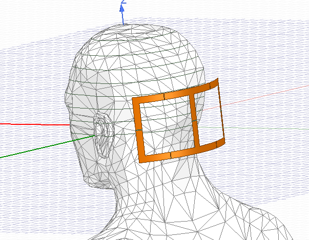
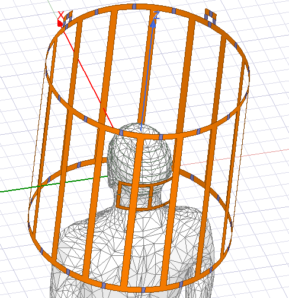
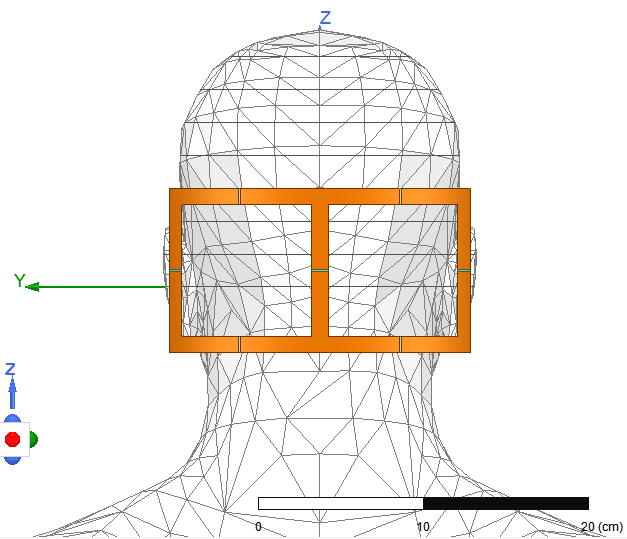
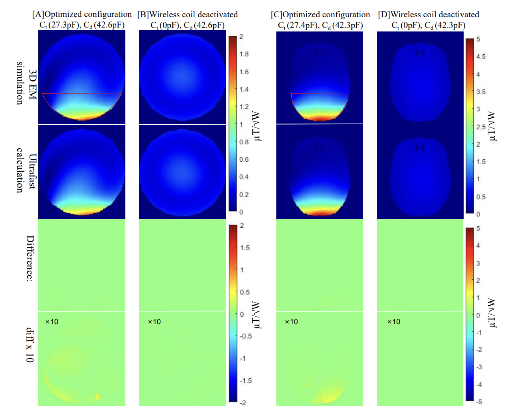

Magnetic Resonance Imaging, 2026 · 2024/12–2025/8
Fast EM–RF Co-Simulation for MRI
Fast Electromagnetic and RF Circuit Co-Simulation for Passive Resonator Field Calculation and Optimization in MRI
Paper
Passive resonators have been widely used in MRI to manipulate RF field distributions. However, optimizing these structures using full-wave electromagnetic (EM) simulations is computationally prohibitive, particularly for massive-element passive resonator arrays with many degrees of freedom. This work presents a co-simulation framework tailored specifically for the analysis and optimization of passive resonators. The framework performs a single full-wave EM simulation in which the resonator’s lumped components are replaced by ports, followed by circuit-level computations to evaluate arbitrary capacitor/inductor configurations. This allows integration with a genetic algorithm to rapidly optimize the resonator parameters to enhance B1 fields in a targeted region of interest (ROI). The proposed method showed excellent agreement with full-wave EM simulations, with relative errors below 1%. The genetic-algorithm-driven optimization, involving tens of thousands of capacitor combinations, completed in under 5 minutes—whereas equivalent full-wave EM sweeps would require an impractically long computation time.
Simulation setup
Two 100 × 200 mm wireless coils are positioned behind the head inside a 3 T birdcage coil. The circuit uses tuning capacitors (Ct) and a decoupling capacitor (Cd), which the co-simulation framework can evaluate without repeating the full-wave electromagnetic simulation.



Results
The first two columns (A–B) show the cylindrical phantom, and the last two columns (C–D) show the human head model. Within each pair, the left column (A or C) is the optimized resonator configuration, while the right column (B or D) is the body-coil-only baseline with the wireless coil deactivated. The optimized array increased the local transmit field (B1+) by approximately 2.7× in the phantom and 3.7× in the head model.
The first row presents the full-wave 3D EM simulation, and the second row presents the ultrafast co-simulation result. The two methods agree closely, with an average difference of only 0.5% within the target region of interest. Evaluating one configuration is reduced from up to 5 hours with full-wave simulation to approximately 10 milliseconds with co-simulation. As a result, the genetic algorithm evaluated tens of thousands of capacitor combinations in under 5 minutes, while an equivalent full-wave sweep would require more than 6 years.

Conclusion
This work extends EM–RF co-simulation to passive resonator design. It cuts the cost of evaluating one configuration from hours to milliseconds while staying within 0.5% of full-wave results in the target region, which makes large-scale resonator optimization practical.